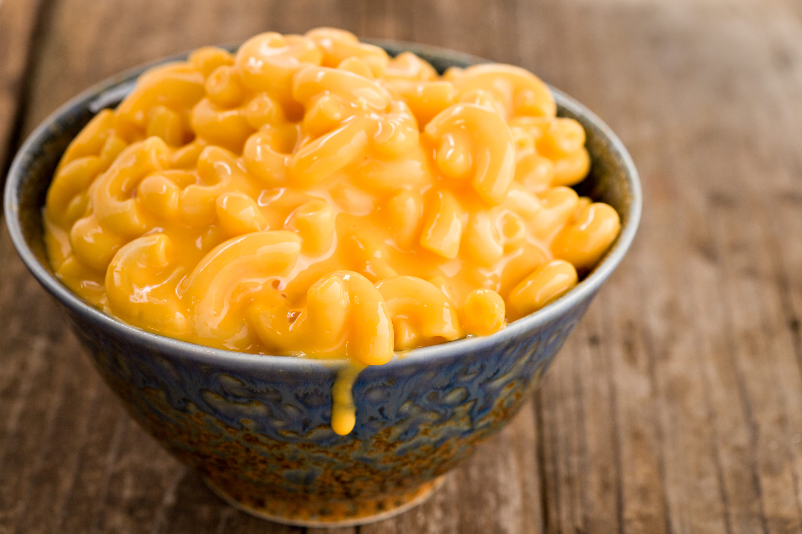

Macaroni and cheese (also called mac and cheese in Canada and the United States and macaroni cheese in the United Kingdom) is a dish of cooked macaroni pasta and a cheese sauce, most commonly cheddar sauce.
The traditional macaroni and cheese is a casserole baked in the oven; however, it may be prepared in a sauce pan on top of the stove or using a packaged mix.The cheese is often first incorporated into a Béchamel sauce to create a Mornay sauce, which is then added to the pasta. In the United States, it is considered a comfort food